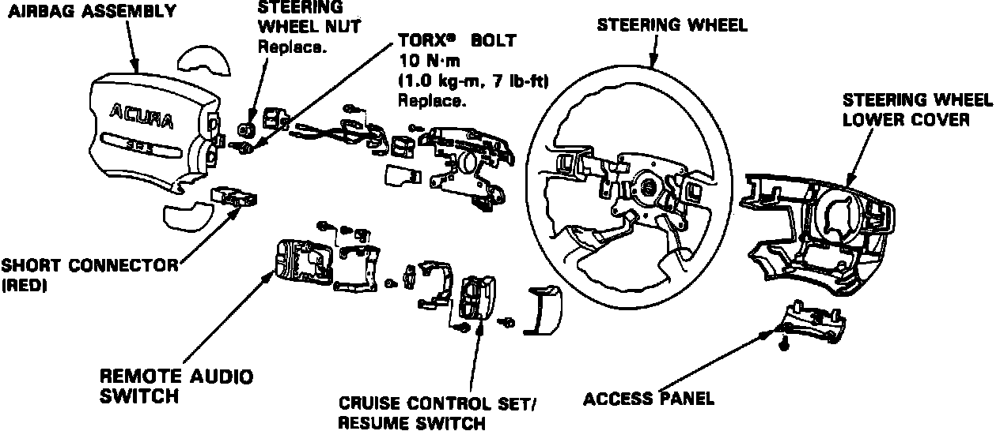

Steering Wheel: Service and Repair
WITH SUPPLEMENTAL RESTRAINT SYSTEMWARNING: Before starting any repair operation involving the steering wheel assembly equipped with a Supplemental Restraint System (SRS), disconnect both negative and positive battery cables and wait at least 3 minutes before proceeding. Use caution in storing the air bag assembly, store the air bag assembly face up, if placed face down accidental deployment could propel the unit with enough force to cause serious injury.
Removal
Fig. 1 SRS Red Connector:

Fig. 19 Supplemental Restraint System Steering Wheel Exploded View:

1. Disable coded theft protection system as described under Accessories and Optional Equipment / Antitheft and Alarm Systems / Service and Repair.
2. On models equipped with airbag, disarm airbag system as described under Air Bags and Seat Belts / Air Bags (Supplemental Restraint Systems) / Airbag System Disarming.
3. Remove maintenance lid from under side of steering wheel, then short connector.
3. From the under side of steering wheel, disconnect connector between air bag and cable reel.
4. Connect the short connector (red lead) to air bag side of the connector, Figs. 1 and 19.
5. Remove maintenance lid from left side of column, then the cruise control switch cover.
6. Remove T30 Torx bits from left and right sides of steering wheel, then remove air bag assembly.
7. Remove steering wheel assembly.
Installation
1. Install Steering wheel assembly, then replace shaft nut and torque to 36 ft. lbs.
2. Place air bag assembly on steering wheel, then secure with new Torx bolts. Insure air bag assembly is securely attached to steering wheel: otherwise, severe personal injury could result during later bag deployment.
3. Connect air bag connector and cable reel connector.
4. Attach short connector to under side maintenance lid. then install lid.
5. Connect positive and negative battery cables. Ensure proper operation of SRS by turning On ignition switch to II, the instrument panel SRS light should go on for about 8 seconds and then go off.
5. Restore coded theft protection system and rearm airbag.
LESS SUPPLEMENTAL RESTRAINT SYSTEM
1. Remove center pad of steering wheel.
2. Remove steering wheel shaft nut.
3. Remove steering wheel by rocking it slightly from side to side and pulling back steadily.
4. Reverse procedure to install, replacing steering wheel shaft nut and torque to 36 ft. lbs.